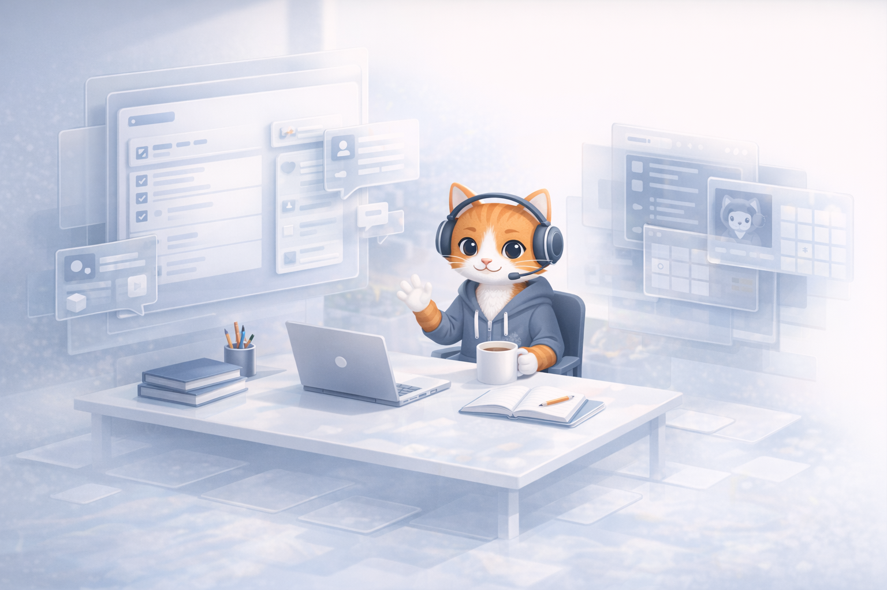

OpenTutor: an open model for homeschooling through GitHub, Discord, and a Claude-backed tutor.
OpenTutor is the platform name. Vibe remains the tutor. This page is structured as a design white paper for a parent-operated homeschool system where curriculum lives in repositories, daily instruction lives in Discord, and AI support stays visible, supervised, and accountable.

This paper proposes a lightweight homeschool operating model built from open tools rather than closed education software. GitHub acts as the record of curriculum, schedules, and student output. Discord acts as the classroom and communication layer. Vibe, backed by Claude, acts as the tutoring layer inside that environment so students can get help without leaving the parent-supervised context.
System Architecture
OpenTutor separates the homeschool stack into three layers so each tool can do one job well without turning the family workflow into enterprise software.
The Assignment Hub
GitHub becomes the source of truth for the school itself. Curriculum can live in subject repositories, the weekly calendar can live in a schedule repo, and each student can build a visible portfolio of writing, projects, revisions, and progress over time.
The Virtual Classroom
Discord is the daily interface. Subject channels, announcements, office hours, assignment check-ins, and quiet study rooms give kids one place to ask questions, receive direction, and stay connected to the rhythm of the day.
The AI Tutor
Vibe sits inside Discord and is backed by Claude to explain concepts, break down assignments, quiz students, rephrase directions, and help a stuck learner keep moving without leaving the supervised classroom environment.

Design Rationale
The intent is not to simulate school software. The intent is to create a documentable, flexible, parent-run learning environment that can improve over time.
Everything stays reviewable
Assignments, revisions, schedules, and bot behavior can all be tracked. GitHub history shows what changed and when. Discord logs show what happened in the classroom. That makes it easier to see effort, growth, and gaps without relying on memory.
Help shows up where the work happens
Kids do not need to bounce between separate portals for answers. They can ask in the same channel where the assignment was posted, where the resources live, and where the family already communicates. That reduces friction and keeps attention on the task.
Parents stay in the loop
Claude-backed tutoring is useful because it is immediate, but the system still keeps the parent in control. Roles, channels, moderation tools, and logs make the adult the operator of the environment rather than handing that control to a black box.
The curriculum can evolve like software
Homeschool plans change. Lessons get improved, reading lists get swapped, pacing shifts, and projects get refined. Storing the school in repositories makes the curriculum editable, reusable, and easier to improve semester after semester.
Students practice future workplace tools
Discord, Teams, Slack, GitHub, channels, mentions, async check-ins, repository hygiene, and digital collaboration are not side benefits. They are core forms of literacy for modern digital work, and students can start learning them early in a supervised environment.
Professional habits become normal early
Instead of learning only isolated subjects, students also learn how to communicate in channels, document progress, manage versioned work, ask clear questions, and move projects forward using the same patterns they are likely to see later in technical, creative, or corporate settings.
Governance & Safety
The tutor layer only makes sense in a homeschool setting when parents retain authority over permissions, logs, discipline, and classroom structure.
Classroom Moderation
Parents can manage the server directly through Vibe. Kick, ban, timeout, or clean up disruptive activity with admin-gated commands instead of digging through Discord menus mid-lesson.
Full Parental Oversight
Administrative actions are logged to #bot-logs, creating a clear audit trail for moderation and server changes. Parents can review how the classroom is being managed instead of relying on invisible automation.
Structured Learning Spaces
Need a new room for algebra, writing workshop, science lab, or project review? Vibe can help set up organized channels so each subject has a dedicated place for materials, questions, and discussion.
Immediate, Contextual Help
Students ask for help by tagging the bot in the exact study space they are already using. That makes tutoring feel like part of the classroom workflow instead of a separate app they have to learn.
Human-in-the-Loop AI
Claude gives explanations, examples, and scaffolding, but the parent still decides the curriculum, the pace, and the standards. The bot supports instruction; it does not become the school.
Portfolio-Based Learning
Because student work can live in repositories, the output of learning becomes visible: essays, notes, code, research, revisions, and project artifacts that show how understanding develops over time.
Repository Map
The bot repo is the first live component. The larger school model can expand into a compact repository map that remains transparent and easy to maintain.
Vibe bot repository
The current open source repo contains the Discord bot, Claude integration, moderation tools, conversation handling, and the logic that makes the AI tutor available inside your homeschool server.
View the bot on GitHubCurriculum repository
This can hold subject outlines, unit plans, reading lists, assignment prompts, rubrics, and project briefs. Updating the curriculum becomes as simple as editing files and tracking changes over time.
Schedule repository
This repo can define the weekly rhythm of the school: calendar structure, daily checklists, pacing guides, semester goals, and special project windows. It becomes the operational layer that connects planning to execution.
Per-student repository structure
Each student has a dedicated root folder. Inside that folder are subject folders. Inside each subject are assignment materials, working files, and submission folders that make progress visible and reviewable.
Assignment workflow
Students learn a concrete cycle: pull down the current assignment, complete the work in the correct subject area, and recommit the finished work back into the assignment folder with revisions tracked over time.
Projects alongside classwork
The structure supports more than worksheets. Students can also maintain individual projects such as coding experiments, website design, research pieces, and multimedia work inside long-running project folders.

Knowledge Map
The curriculum is not just a list of disconnected subjects. It is a connected map of concepts, templates, projects, and practical life knowledge that students revisit through assignments and individual work.
Language Arts
Students move through literature, archetypes, mythology, poetry, and structured reflection. The knowledge map shows how reading assignments connect to writing templates, interpretation, and cultural context.
Math
Core math covers fractions, ratios, integers, geometry, statistics, measurement, and interactive visual lessons like the golden ratio and rotating or splitter tools that make abstract ideas concrete.
STEM
Science branches into physics, chemistry, and biology fundamentals. Students work through motion, forces, atoms, reactions, cells, photosynthesis, and systems thinking using a visible knowledge progression.
Social Studies
World facts, government basics, U.S. principles, geography, oceans, continents, and historical choke points help students build a mental map of how places, institutions, and events connect.
Money & Life
Financial tools and principles, budgeting, investing basics, careers, pay, currency, and credit literacy make the curriculum more practical and future-facing than a conventional textbook sequence.
Project Studio
Assignments are paired with real making: coding, website design, reviews, templates, and portfolio work. That helps students move from “I studied this” to “I built this and can show it.”
Implementation Notes
A workable homeschool system also needs a clear operating model for assessment, parent review, and student accountability. These notes describe how the platform is intended to function in practice.
Assessment through artifacts
OpenTutor treats commits, drafts, revisions, projects, and reflections as evidence of understanding. Progress is visible in the work itself, not only in a gradebook detached from what the student actually made.
Parent review as governance
The parent acts as editor, reviewer, moderator, and pacing guide. Because the full workflow is documented in repositories and channels, review can happen continuously rather than only at the end of a unit.
Digital fluency as a learning outcome
Students are not only learning subject matter. They are also learning how to manage files, work asynchronously, respond to written feedback, version their work, and communicate in structured digital spaces.
Tutor Layer
Vibe is the friendly tutor persona inside OpenTutor. Its behavior is not marketing copy; it is defined directly in the Python bot code and designed for concise, encouraging, middle-school support inside Discord.

Built for the classroom channel
Vibe is designed to live inside the same subject spaces where students already work. Instead of sending kids to another tool, the tutor meets them in the study flow they are already using.
Grounded in practical strengths
The bot keeps recent context, knows who is speaking, stays concise, and operates with guardrails. That combination makes it more useful for homeschooling than a generic chat window.
Clear middle-school explanations
The system prompt explicitly positions Vibe as educational, encouraging, and good at making complex middle-school topics easy to understand without overexplaining.
Remembers the recent thread
It keeps up to 10 recent message pairs per channel, which means follow-up questions can build on what a student already asked instead of restarting every time.
Knows who is speaking
User display names, roles, and mention targets are injected into the model context, so Vibe can interpret classroom conversations with much better situational awareness.
Simple to use in real time
Students only need to @mention Vibe in a subject channel. That keeps tutoring lightweight and makes it easy to ask for help the moment confusion happens.
Handles long answers safely
If a response gets too long for Discord, the bot automatically splits it into clean message chunks. That keeps explanations readable without breaking the conversation flow.
Parent-first oversight
A built-in cooldown limits spam, destructive actions are restricted to the Admin role, and admin actions are logged to #bot-logs for transparent supervision.
Daily Timeline
A useful homeschool platform has to describe the actual shape of a day. This timeline shows how OpenTutor can support planning, study, tutoring, projects, and review from morning to afternoon.
Morning check-in and assignment pull
The day opens in Discord with the parent’s framing note, priorities, and links to the correct subject folders. Students learn to locate the day’s work, pull current assignments, and understand the shape of the day before they begin.
Operational readiness
Students start with a clean view of the day’s tasks, the correct repository locations, and the expectations for what will be committed back later.
Language arts, math, STEM, and social studies
Students work through their subject folders and assignment materials directly. Because each child’s structure is organized by subject, the flow stays predictable even when assignments vary in type or depth.
Saved work in the right place
Responses, notes, worksheets, and drafts begin accumulating inside the correct subject and assignment folders instead of being scattered across devices.
On-demand tutoring inside the classroom flow
When confusion appears, Vibe can rephrase directions, explain a middle-school concept, or help a student recover momentum. The parent stays in control while the tutor reduces waiting and frustration.
Questions become forward motion
Students learn to ask clearer questions, use async help responsibly, and keep moving instead of stalling out on one blocker for half the day.
Midday review of progress and blockers
The parent can quickly review what has been completed, what is blocked, and which folders or subjects need attention in the afternoon. This turns the repository structure into a practical management surface.
Visible pacing decisions
Students see that progress is measurable, revisions are normal, and work can be redirected without losing the trail of what happened earlier in the day.
Coding, website design, and individual projects
The afternoon expands beyond assignment completion into project folders for coding, design, research, and portfolio work. This is where students practice making things, not just finishing prompts.
Portfolio-grade artifacts
Code, websites, creative assets, and project drafts accumulate as durable evidence of skill. Students learn that commits can represent real shipped work, not only homework responses.
Recommit work and plan the next step
The day ends with students recommitting finished assignment work into the correct folders, noting what changed, and identifying what should happen next. The routine reinforces documentation, ownership, and continuity.
A clean end-of-day record
The result is a visible trail of completed assignments, active projects, and next actions that can be reviewed by the parent and revisited by the student tomorrow.

Morning structure
The day begins with orientation, clarity, and visible expectations rather than scattered tasks across multiple apps.

Focused study window
Students move between subject channels, repository materials, and lightweight tutor support without losing their place.
Review and closure
Reflection is part of the operating model so progress becomes visible, discussable, and easier to improve tomorrow.
Support the Project
OpenTutor is an open-source homeschool infrastructure project. Donations can fund API costs, curriculum maintenance, documentation, and continued development.
Use this space for a production BTC address or a donation processor link.
Use this space for ETH, Base, or another EVM-compatible donation address.
Use this space for a SOL donation wallet if you want to support lower-fee contributions.
Before publishing real addresses, replace the placeholders above with production wallets you control, ideally a multisig or hardware-wallet workflow for treasury funds.